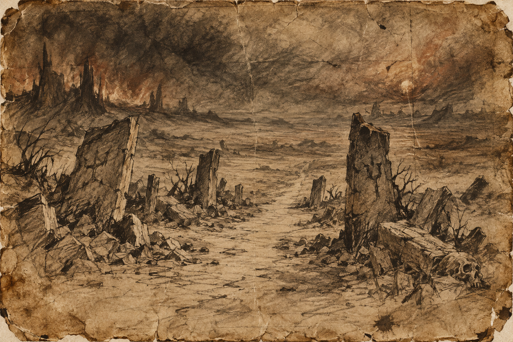

The boundary
A line of weathered stones marks where the familiar roads stop. Some have fallen; others were never carved. Beyond them there is no visible punishment, welcome, or assurance that the next country will make sense.
No wall prevents passage beyond Hell. Few cross. A locked story can outlast any gate.

A line of weathered stones marks where the familiar roads stop. Some have fallen; others were never carved. Beyond them there is no visible punishment, welcome, or assurance that the next country will make sense.
Travelers gather here carrying the stories that made their lives legible: chosen, damned, obedient, betrayed. They can set down their luggage. They find the stories harder to release. No officer turns them back; many still wait for permission.
The archive contains no dependable map of the far side. Accounts brought back disagree on everything except the absence of a lock. The border asks no confession. Crossing means accepting that the next step may belong to the traveler alone.